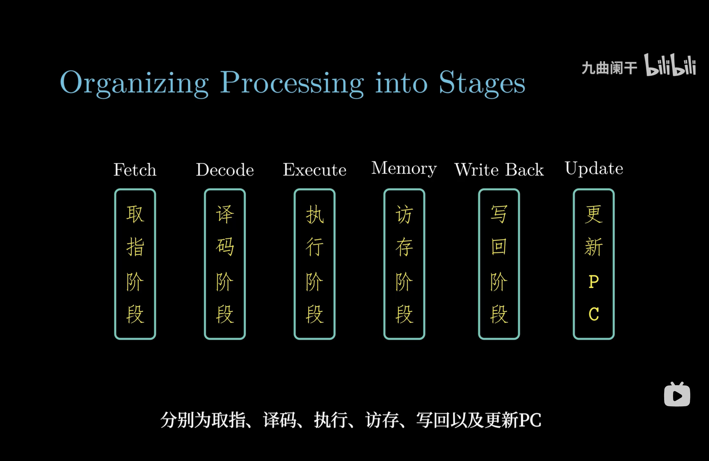
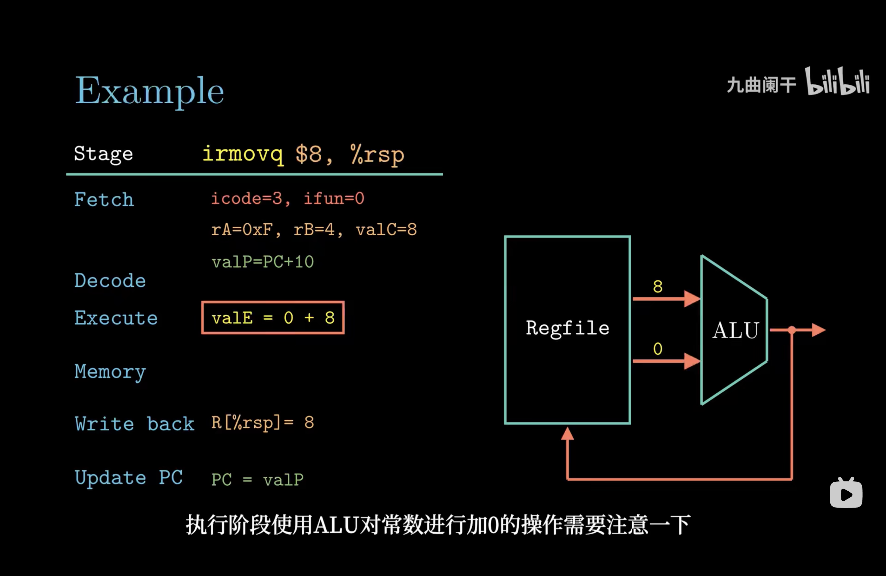
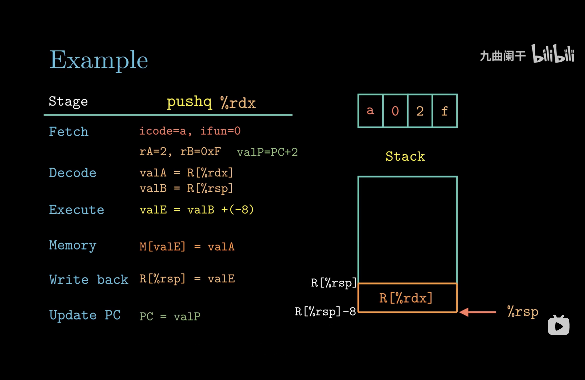
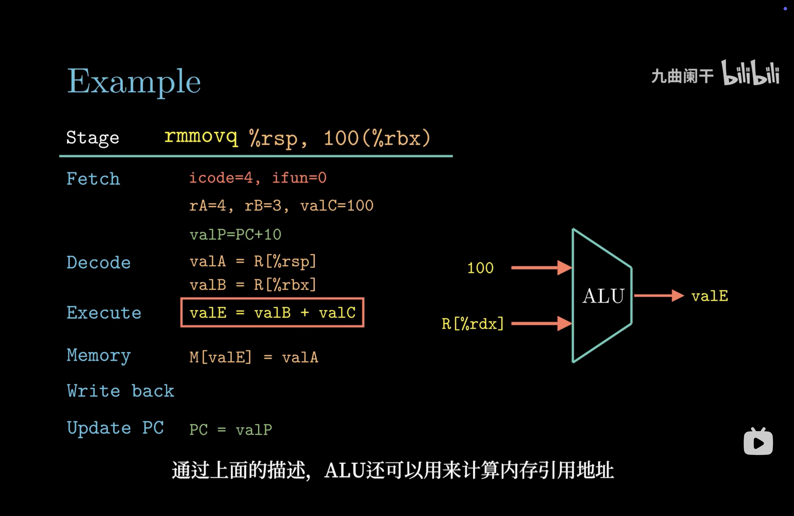
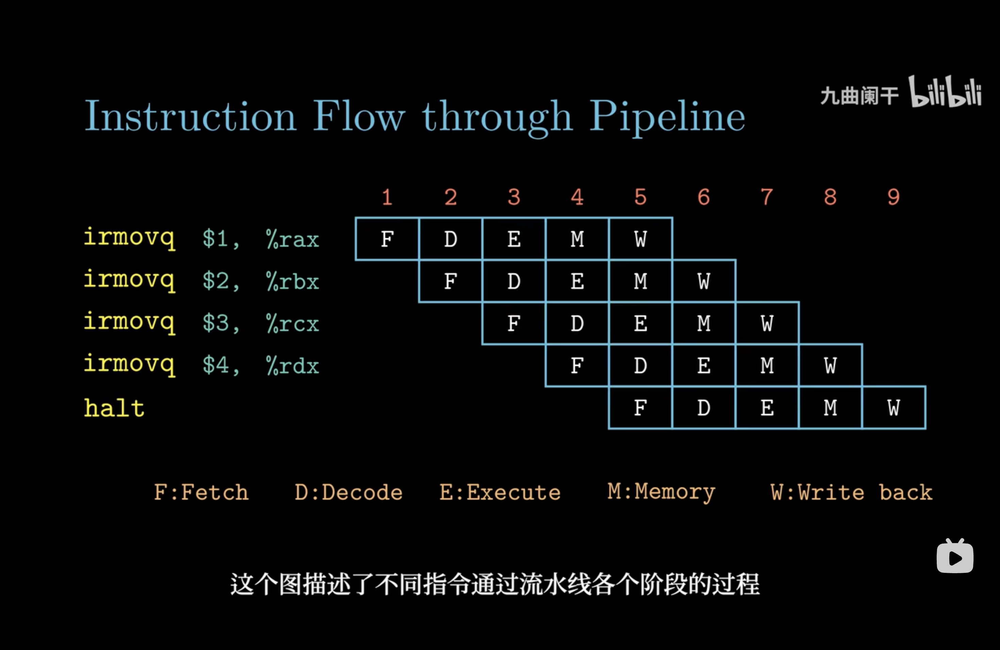
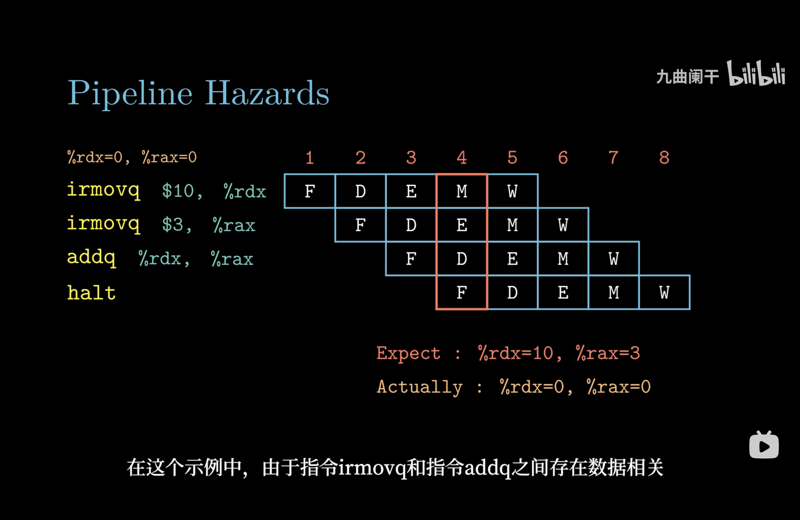
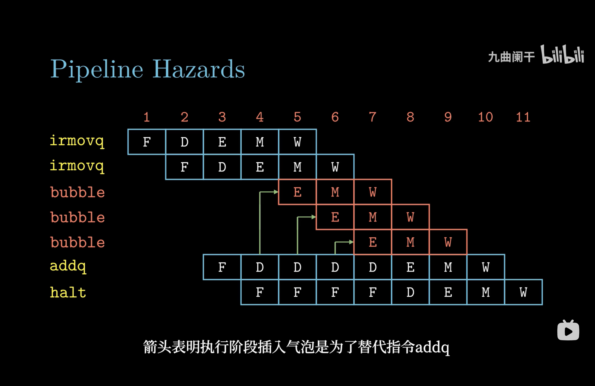
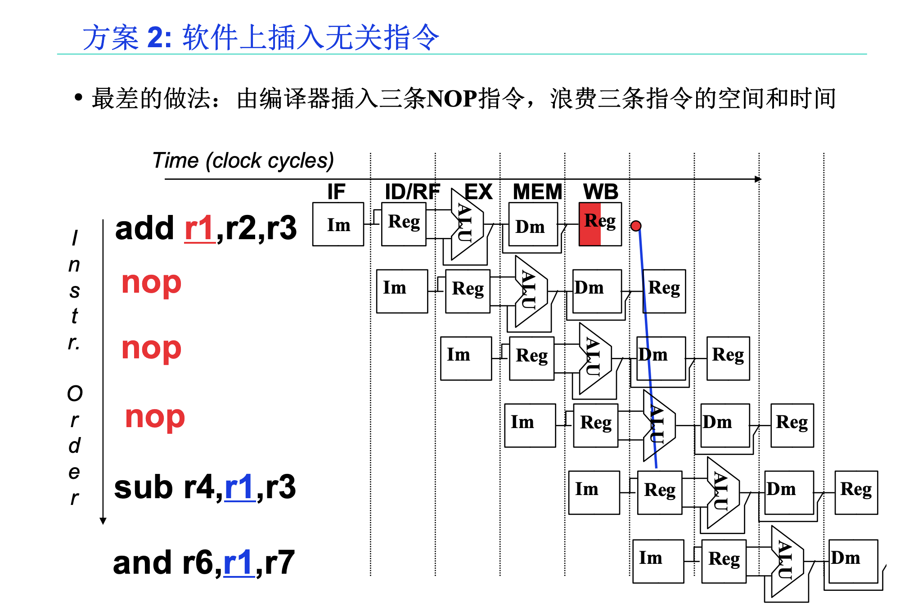
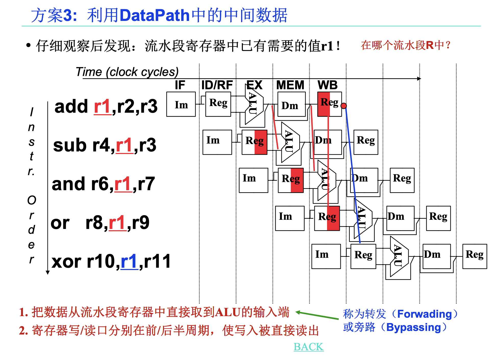
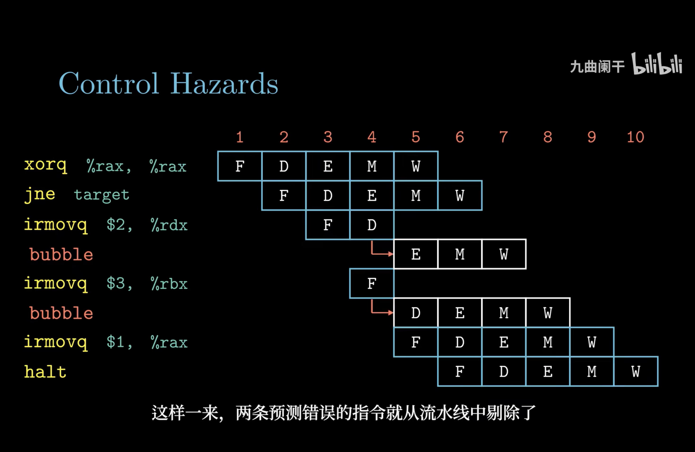

操作系统（八）指令系统结构
目录
第五章 指令系统结构
指令
执行流程
- 取指阶段：以PC作为第一个字节的地址，从内存中读出10个字节
- 译码阶段：指令字段译码，将操作数的值写到ALU读取的寄存器位置
- 执行阶段：ALU根据操作数和操作码计算值
- 访存阶段：读写内存位置
- 写回阶段：将结果值写入寄存器
- 更新PC：更新PC指向下一条指令的地址

指令示例
irmovq
将一个 64 位的立即数（常数）加载到目标寄存器中

pushq
将一个 64 位的值从寄存器存储到栈上，并更新栈指针（%rsp）

rmmovq
将一个寄存器的值存储到内存的某个地址中，该地址由一个基地址和一个偏移量计算得到

流水线
基本形式
通过将多个指令分解为一系列子任务，并将这些子任务分阶段并行执行来实现指令并行处理

数据冒险
原因
指令乱序执行时，可能会发生读取数据与写入数据之间的时序与空间的相关性，成为数据冒险。如果不加以处理，可能会导致竞态条件，即读的不是想要的值或写的不是正确位置

解决办法
- 延迟执行：硬件上阻止指令执行，增加流水线气泡

- 插入无关指令：软件上插入无关指令

- 数据旁路：使用最新计算结果，不等待寄存器写回结果

控制冒险
原因
处理器遇到分支指令，不能在流水开始阶段就判断出分支结果
解决办法
-
延迟执行：增加流水线气泡
-
分支预测：使用分支预测，然后投机执行。如果分支预测失败，则要有能力恢复到分支指令执行完毕时刻的寄存器状态，进入正确的分支继续执行
